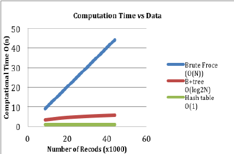
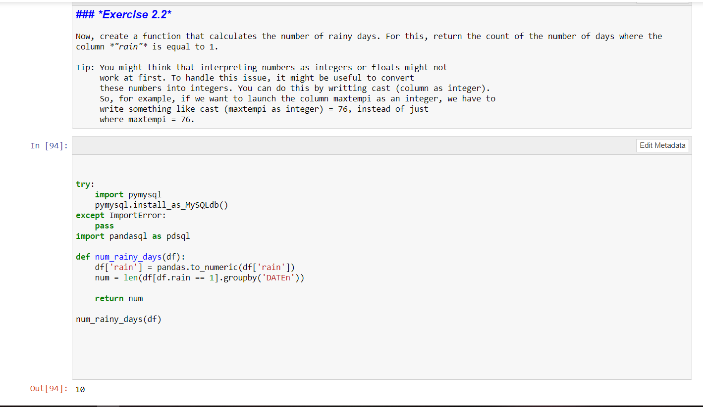
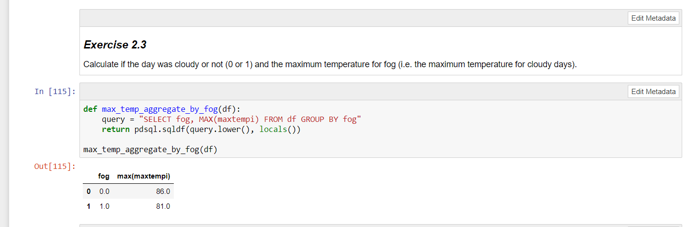
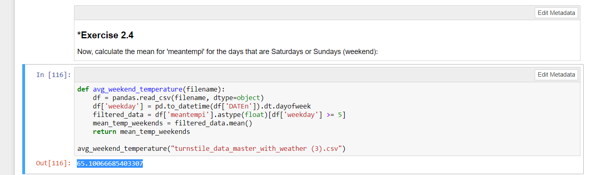
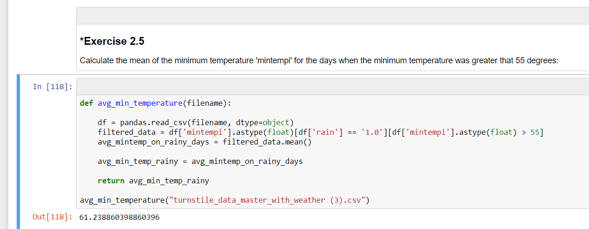
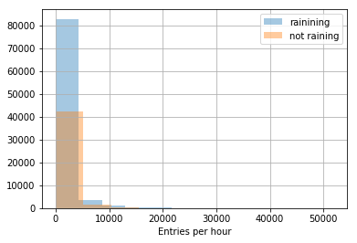
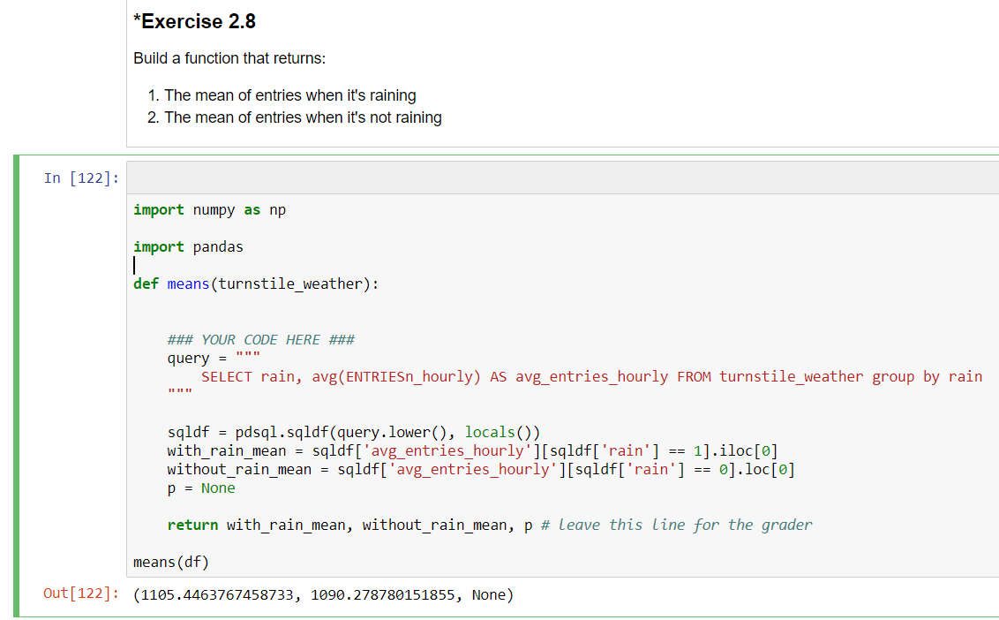

SUBWAY DATA ANALYSIS
The NYC public transportation system – Metro Transit Authority- provides data for download via csv files. Part of information available are data from the subway turnstiles, containing weekly logs for cumulative entries and exits by turnstile and by subway station provided during a timeframe.
GOAL OF THIS PROJECT: is to explore the relationship between data from NYC subway turnstiles and the city weather.
REQUIREMENT: data from the subway and data from the weather in NYC.
LINK used for getting information: http://web.mta.info/developers/turnstile.html
Analysis of the above gathered information:
Learned methods:
Basics of BigData
HDFS and MapReduce – Hadoop Distributed File System and MapReduce
MapReduce Design Patterns---1. Filtering Patterns
2. Summarization Patterns—Numerical Summarization
3.Structural Patterns
Deploying Hadoop on Amazon
Nodes- NameNode
DataNode
On demand Hadoop Clusters
BigData- Data that is too big to be processed by a single machine.
Data is increasing by the time, numerous organizations generate several bytes of data.
The following data-time graph shows the rate of increase of data production,

Source of the graph: https://www.researchgate.net/figure/Computational-time-vs-Data-graph-for-range-query_fig2_277262930
How can we explain BigData?
3V’s define the data size, namely Volume, Variety, and Velocity
Volume: Refers to the size of the data we are dealing with.
Variety: Refers to the fact of the data that it is coming from different sources in different formats.
Velocity: Refers to the speed at which it is generated, speed required to be made available for its processing.
This much amount of data is needed to be stored somewhere, this can be easily stored at SAN (Storage Area Networks), it assures the reliability of data stored but processing and accessing the data from SAN is difficult.
Hence, some amount of data is needed to be discarded. But none of the data can be treated as useless to be discarded hence, some another storing platform is needed to look upon.
Hadoop stores the data in distributed format.
HDFS: Hadoop Distributed File System, each file is divided into smaller chunks called blocks by default of 64 MB. Each one block goes to cluster.
Each cluster have data node and name node. Data node stores the data and some redundant data to recover in case of data node failure.
MapReduce is used to process the stored-on Hadoop cluster.
Efficient processing of data is done by mapper and reducer two different groups.
In between mapper and reducer shuffle and sort takes place, sorting refers to the fact that reducer organizes the records in a sorted way and writes the final results.
There can be more than one reducer, each reducer can have any number of keys.
The data included in the project is containing the entry and exit records of June month of nyc subway turnstile. It is obvious that the data is too large, this data can be considered as big data.
Files included in the project are:
turnstile_data_master_with_weather (3).csv
files downloaded from the link : http://web.mta.info/developers/turnstile.html
june2017.txt this file shows the records of June collectively, result of a exercise in ipynb file.
Files downloaded from the link mention in 2nd statement are of 3rd , 10th,17th,24th June 2017.
I have attached these files too with the other files named as per requirement.
Output.txt file
mapper_result.txt
reducer_result.txt
Answers to the ipynb file
2.2 It requires the coder to write a code to count the number of rainy days i.e. where the column rain is equal to one.
On writing the code and executing it in the ipynb file (jupyter notebook) , the number of rainy days are found to be equal to 10.
Here I am attaching the screenshot of the same for convenience.

2.3 It requires the coder to write a code to calculate the maximum temperature for the fog (cloudy days). On writing and executing the code the maximum temperature on cloudy day is found to be 81.0 and on non-cloudy day i.e. when cloud is 0 the temp is 86.0.
Here I am attaching the screenshot of the same for convenience. 
2.4 It requires the coder to write a code to find the mean of mean temp on the weekends i.e. of Saturdays or Sundays. On writing and executing the code the mean is found to be 65.10066685403307
Here I am attaching the screenshot of the same for convenience.

2.5 It requires the coder to code to find out the mean of the minimum temperature 'mintempi' for the days when the minimum temperature was greater than 55 degrees. On writing the and executing the code the mean is found out to be 61.23
Here I am attaching the screenshot of the same for convenience.

2.6 This question includes the visualization part
1. plot depicting the relationship between two or more variables , Here the histogram is shown for the hourly entries on rainy and non-rainy day.
The variables included are frequency and entries_hourly
Here I am attaching the picture of the same obtained histogram,

The X axis is showing hourly entries and Y axis is showing Frequency.
The peach color indicates the days when it is not raining, and blue indicates when it is raining.
By the above graph(histogram), it can be drawn that the quantities on the X axis isn’t normally distributed. It is a positively skewed distribution.
2.7 The answer is noted in the ipynb file.
2.8 This question includes the analysis part i.e. the 3rd part of the rubrics ,
It requires the coder to code a function that returns:
The mean of entries when it's raining
The mean of entries when it's not raining
The mean of entries on rainy day is found to be : 1105.45
And the mean of entries on non-rainy day is found to be: 1090.28
Here I am attaching the picture of the same for convenience

Conclusion drawn from the mean: The avg no. entries on rainy day is more than that of non-rainy day.
Linear Regression
I have used the gradient descent algorithm is used. I have used the default values i.e. alpha = 0.5 and 75 iterations. Features used includes rain or no rain, precipitation, mean wind speed, hour, weekday and mean temperature. The dummy variable called UNIT is introduced.
These features are used because continuous variables in this type of data set provide more information.
Weekday influence more the ridership rather than fog or rain.
The R^2 value drawn from the regression model is essentially a quantitative measure of goodness of fit and the percentage of variance. R^2 value is found to be nearly equal to 0.56.
Results drawn from the above test:
Differences were observed in the ridership between the rainy days (mean entry: 1105.45) and non-rainy days(mean entry: 1090.28).
The p- value obtained is 0.025.
Hence, a conclusion can be drawn that ridership is different on rainy or non-rainy day with 95% confidence that null hypothesis is false.
More people ride the subway when the weather outside is bad (or its raining).
The positive value of the coefficient indicates that the ridership increases as the rain increases.
The effect of rain or no rain is significantly small in comparison to the weekday and the weekend days.
3.1 The question is to write a mapper code For each entry line, the mapper exit must PRINT (not return) UNIT as a key, and the number of ENTRIESn_hourly as the value. Separate the key and the value with a tab. For example: 'R002 \ t105105.0'
This question utilizes the knowledge acquired in the MapReduce section of the course.
The output file for this question is labeled as mapper_result.txt and it is attached along with the other files too.
3.2 The question is to write a reduer code ,Given the mapper result from the previous exercise, the reducer must print (not return) one line per UNIT, with the total number of ENTRIESn_hourly during May (which is our data duration), separated by a tab. An example of exit line from the reducer may look like this: 'R001 \ t500625.0
The output file for this question is labeled as reducer_result.txt and it is attached along with the other files too.